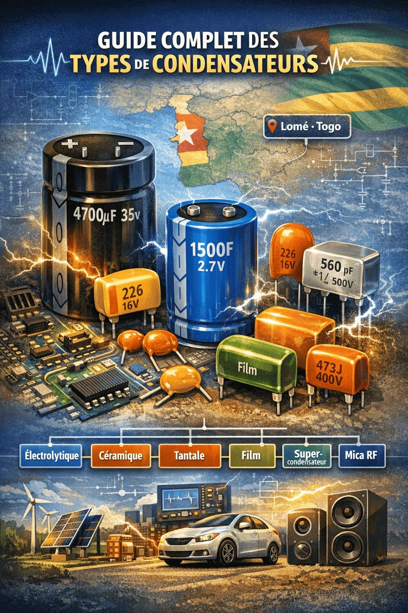
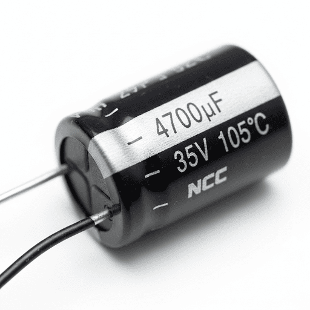
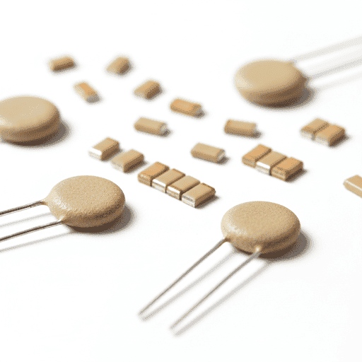
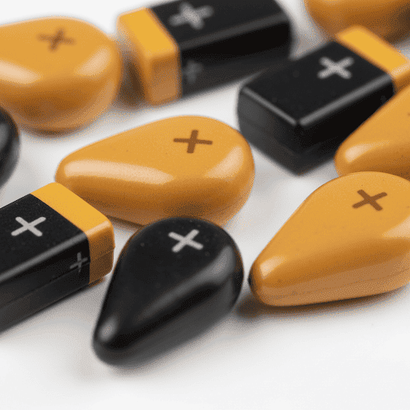
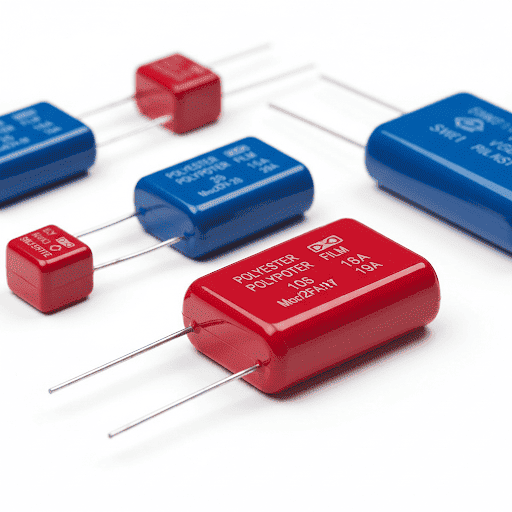
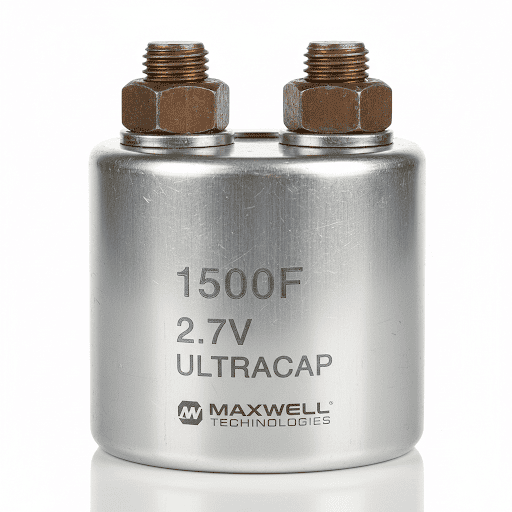
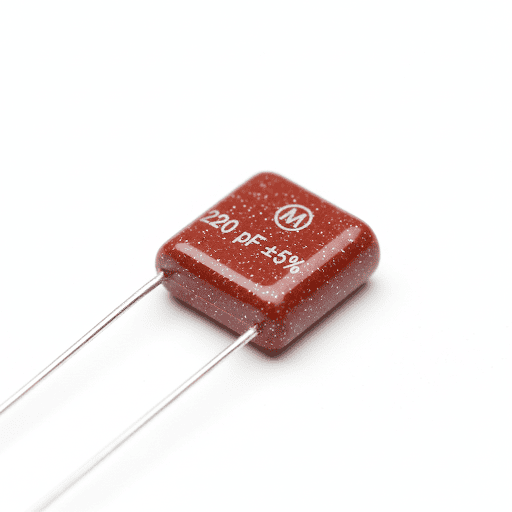

Guide Complet des Types de Condensateurs
Tout savoir pour choisir le bon composant électronique. De l'électrolytique au supercondensateur, Découvrez tous les types de condensateurs existants.

bolt Pourquoi les condensateurs sont essentiels en électronique
Le condensateur est l’un des composants électroniques les plus fondamentaux. Que vous soyez professionnel, étudiant ou bricoleur passionné au Togo, comprendre les différents types de condensateurs est crucial. Chez TogoMicroFarad, nous distribuons des composants de haute qualité pour le marché togolais. Un condensateur stocke et restitue l’énergie électrique grâce à un diélectrique isolant entre deux électrodes.
💡 Conseil d'expert tropical
Au Togo, la chaleur ambiante accélère le vieillissement. Vérifiez toujours la tension de service et privilégiez des condensateurs endurance 105°C pour les alimentations critiques.
Condensateurs Électrolytiques
Le standard pour le filtrage d’alimentation et le stockage d’énergie. Grande capacité dans un format cylindrique.
| Caractéristique | Valeur / Spécification |
|---|---|
| Capacité | 1 µF → 470 000 µF |
| Tension nominale | Jusqu'à 500 V |
| Durée de vie @85°C | 2 000 – 8 000 h |
| Polarisation | OBLIGATOIRE (+ / -) |
✅ Avantages
- check_circle Capacité volumétrique élevée
- check_circle Coût compétitif
🚀 Applications
- • Alimentations, lissage
- • Audio de puissance
- • Onduleurs basse fréquence
Inversion polaire = destruction
Respectez la bande négative, surtout en climat chaud. Une surtension provoque l’éclatement.


Condensateurs Céramiques
Dominent les hautes fréquences. Ultra-compacts, non polarisés, durée de vie quasi illimitée.
Stabilité ±1%, -55°C à 125°C, oscillateurs de précision.
Capacité élevée, variation avec tension/température, idéal découplage.
✅ Avantages
- • ESR très faible
- • Pas de polarité
- • Idéal RF & GHz
🚀 Applications
- • Découplage alimentation
- • Circuits de temporisation
- • Télécoms, IoT
Condensateurs au Tantale
Densité de capacité exceptionnelle, courant de fuite ultra-faible, format SMD compact.
| Capacité | 0,1 µF → 1000 µF |
| Tension | 2,5V → 50V |
| Risque | Ignition si surtension >1,3x Vn |
⚠️ Ne jamais dépasser la tension nominale. Préférer les versions polymère (ESR ultra faible, plus sûres).
Applications : smartphones, équipements médicaux, systèmes embarqués.


Condensateurs à Film
Faible perte, autorégénération, tolérance de précision (±1%). Idéal audio haute-fidélité et puissance.
Diélectriques : PP (polypropylène), PET (polyester), PPS, PTFE. Tension jusqu’à 1000V AC, ESR < 10 mΩ.
✅ Avantages : stabilité thermique, longue durée (>100 000h), pas de polarité.
Applications : onduleurs solaires, correction facteur puissance, crossover audio.
Supercondensateurs (EDLC)
Capacité de 1F à 10 000F. Charge en secondes, durée de vie >500 000 cycles.
5-10 Wh/kg
2,5V – 3V
Utilisations : freinage régénératif véhicules, UPS, stockage tampon énergies renouvelables, sauvegarde RTC.


Condensateurs au Mica
Précision inégalée (tolérance ±1%), pertes diélectriques minimes, parfait pour oscillateurs et émetteurs.
✔️ Stabilité à long terme
✔️ Température -55°C → +150°C
✔️ Utilisation militaire, aérospatial, mesure de précision.
Condensateurs Variables & Spécialisés
Pour les réglages fins, la haute tension et les applications historiques.
tune Variables
Les condensateurs variables permettent d’ajuster manuellement la capacité. Ils sont essentiels dans les circuits nécessitant un réglage fin de fréquence. Types de Condensateurs Variables :
- À plaques mobiles : radios, récepteurs AM/FM.
- Trimmer : calibration, réglage unique.
- Varicap (Varactor) : syntonisation électronique par tension.
history_edu Spécialisés
- Papier (historique) : électronique vintage, haute tension => Aujourd’hui largement remplacés, ils utilisaient du papier ciré ou huilé comme diélectrique. Encore présents dans : - L’électronique vintage - Certaines applications haute tension - Équipements nécessitant une résistance aux surtensions
- Condensateurs en Verre : résistance extrême (nucléaire, spatial).
- Traversée (Feedthrough) : filtrage EMI, blindage boîtier.
Comment choisir le bon condensateur ?
Suivez l’arbre de décision selon votre besoin principal.
Critères essentiels : capacité, tension (marge 20-30%), ESR, encombrement, température ambiante (au Togo privilégiez 105°C), durée de vie et coût.
Tableau comparatif récapitulatif
FAQ – Questions fréquentes
Différence entre électrolytique et céramique ?expand_more
Pourquoi durée de vie limitée des électrolytiques ?expand_more
Qu’est-ce que l’ESR ?expand_more
Peut-on remplacer électrolytique par céramique ?expand_more
Supercondensateur vs batterie ?expand_more
🛒 Trouvez vos condensateurs chez TogoMicroFarad
Large gamme de composants certifiés, conseil technique, livraison rapide sur tout le Togo.
Afrique-Togo | www.togomicrofarad.com